Iozone results for fread, data are arranged by block size
- Baseline data set
- ./ext4/ext4_1.iozone
- ./ext4/ext4_2.iozone
- ./ext4/ext4_3.iozone
- ./ext4/ext4_4.iozone
- ./ext4/ext4_5.iozone
- Investigated data set
- ./xfs/xfs1.iozone
- ./xfs/xfs2.iozone
- ./xfs/xfs3.iozone
- ./xfs/xfs4.iozone
- ./xfs/xfs5.iozone
mean => Arithmetic mean
standar dev. => Sample standard deviation
ci. max 90%, ci.min => confidence interval at confidence level 90% => it means that mean value of the distribution lies with 90% propability in interval ci_min-ci_max
geom. mean => Geometric mean
median => Second quartile = cuts data set in half = 50th percentile
first quartile => cuts off lowest 25% of data = 25th percentile
third quartile => cuts off highest 25% of data, or lowest 75% = 75th percentile
minimum => Lowest value of data set
maximum => Hightest value of data set
baseline set1 difference => Difference of medians of both sets in percennt. Arithmetic means are used in detail mode instead.
ttest p-value => Student's t-test p-value = probability the both data sets are equal
ttest equality => If p-value is higher than 0.1, data sets are considered being equal with 90% probability. Otherwise the data sets are considered being different.
Linear regression of all results regression line is in y = ax form, b coeficient is zero.
for details about operations performed see Iozone documentation
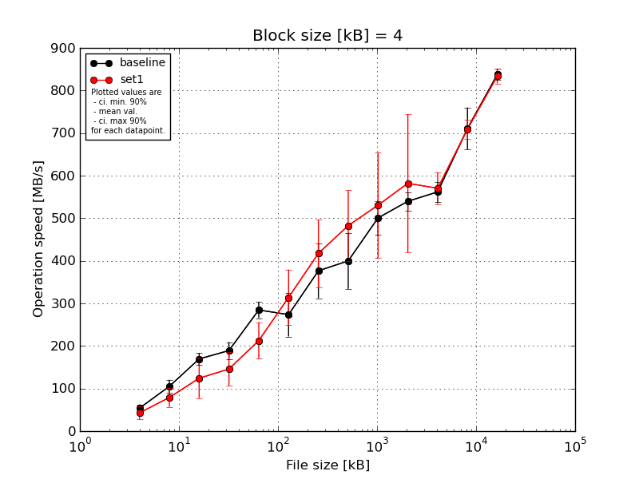
|
Block size [kB] |
File size [kB] |
| 4 |
8 |
16 |
32 |
64 |
128 |
256 |
512 |
1024 |
2048 |
4096 |
8192 |
16384 |
| baseline | 4 | 65.07 | 118.38 | 177.7 | 188.37 | 294.61 | 263.62 | 385.82 | 421.98 | 545.22 | 566.23 | 589.61 | 783.23 | 857.62 |
| 4 | 53.58 | 126.13 | 159.53 | 197.75 | 304.89 | 191.43 | 415.97 | 444.9 | 528.53 | 517.76 | 580.21 | 707.28 | 844.73 |
| 4 | 56.73 | 96.43 | 175.32 | 153.88 | 297.62 | 286.68 | 451.23 | 462.15 | 515.73 | 557.87 | 530.64 | 688.0 | 829.57 |
| 4 | 54.29 | 95.31 | 185.76 | 201.4 | 261.67 | 285.43 | 273.51 | 380.28 | 455.37 | 517.6 | 565.46 | 731.74 | 822.24 |
| 4 | 39.5 | 88.85 | 149.01 | 204.54 | 263.78 | 340.71 | 356.08 | 289.35 | 458.5 | 539.36 | 542.88 | 644.49 | 833.29 |
| mean val. |
53.83 |
105.02 |
169.46 |
189.19 |
284.51 |
273.58 |
376.52 |
399.73 |
500.67 |
539.76 |
561.76 |
710.95 |
837.49 |
| standard dev. |
9.22 |
16.23 |
14.87 |
20.65 |
20.25 |
54.01 |
67.55 |
68.91 |
41.29 |
22.38 |
24.77 |
51.51 |
13.88 |
| ci. min. 90% |
45.04 |
89.55 |
155.29 |
169.5 |
265.2 |
222.09 |
312.12 |
334.03 |
461.31 |
518.42 |
538.15 |
661.83 |
824.26 |
| ci. max 90% |
62.63 |
120.49 |
183.64 |
208.88 |
303.82 |
325.06 |
440.92 |
465.43 |
540.03 |
561.1 |
585.38 |
760.06 |
850.73 |
| geom. mean |
53.15 |
104.04 |
168.93 |
188.2 |
283.93 |
268.94 |
371.25 |
394.43 |
499.29 |
539.39 |
561.32 |
709.46 |
837.4 |
| median |
54.29 |
96.43 |
175.32 |
197.75 |
294.61 |
285.43 |
385.82 |
421.98 |
515.73 |
539.36 |
565.46 |
707.28 |
833.29 |
| first quartile |
53.58 |
95.31 |
159.53 |
188.37 |
263.78 |
263.62 |
356.08 |
380.28 |
458.5 |
517.76 |
542.88 |
688.0 |
829.57 |
| third quartile |
56.73 |
118.38 |
177.7 |
201.4 |
297.62 |
286.68 |
415.97 |
444.9 |
528.53 |
557.87 |
580.21 |
731.74 |
844.73 |
| minimum |
39.5 |
88.85 |
149.01 |
153.88 |
261.67 |
191.43 |
273.51 |
289.35 |
455.37 |
517.6 |
530.64 |
644.49 |
822.24 |
| maximum |
65.07 |
126.13 |
185.76 |
204.54 |
304.89 |
340.71 |
451.23 |
462.15 |
545.22 |
566.23 |
589.61 |
783.23 |
857.62 |
| set1 | 4 | 41.6 | 80.55 | 141.0 | 197.75 | 256.05 | 382.19 | 547.04 | 633.62 | 761.66 | 886.11 | 583.76 | 687.93 | 831.3 |
| 4 | 53.58 | 39.44 | 164.74 | 162.66 | 173.63 | 338.73 | 367.69 | 436.29 | 462.75 | 516.51 | 529.87 | 715.19 | 822.66 |
| 4 | 15.26 | 83.21 | 169.87 | 102.5 | 155.5 | 351.21 | 362.23 | 462.86 | 478.7 | 499.74 | 627.05 | 699.3 | 840.83 |
| 4 | 49.98 | 95.31 | 80.93 | 162.06 | 233.89 | 291.95 | 454.56 | 465.95 | 492.59 | 501.0 | 539.45 | 696.08 | 813.29 |
| 4 | 53.58 | 96.43 | 64.07 | 104.46 | 244.13 | 205.94 | 355.59 | 414.64 | 457.25 | 506.72 | 571.34 | 747.95 | 860.07 |
| mean val. |
42.8 |
78.99 |
124.12 |
145.88 |
212.64 |
314.0 |
417.42 |
482.67 |
530.59 |
582.02 |
570.29 |
709.29 |
833.63 |
| standard dev. |
16.15 |
23.21 |
48.73 |
41.33 |
45.04 |
68.57 |
82.95 |
86.94 |
129.91 |
170.12 |
38.69 |
23.77 |
17.96 |
| ci. min. 90% |
27.4 |
56.86 |
77.66 |
106.48 |
169.7 |
248.63 |
338.34 |
399.78 |
406.73 |
419.82 |
533.4 |
686.63 |
816.51 |
| ci. max 90% |
58.2 |
101.12 |
170.58 |
185.29 |
255.58 |
379.38 |
496.51 |
565.56 |
654.45 |
744.21 |
607.18 |
731.95 |
850.75 |
| geom. mean |
39.07 |
75.35 |
115.39 |
141.04 |
208.57 |
307.15 |
411.34 |
477.1 |
519.95 |
565.96 |
569.26 |
708.98 |
833.48 |
| median |
49.98 |
83.21 |
141.0 |
162.06 |
233.89 |
338.73 |
367.69 |
462.86 |
478.7 |
506.72 |
571.34 |
699.3 |
831.3 |
| first quartile |
41.6 |
80.55 |
80.93 |
104.46 |
173.63 |
291.95 |
362.23 |
436.29 |
462.75 |
501.0 |
539.45 |
696.08 |
822.66 |
| third quartile |
53.58 |
95.31 |
164.74 |
162.66 |
244.13 |
351.21 |
454.56 |
465.95 |
492.59 |
516.51 |
583.76 |
715.19 |
840.83 |
| minimum |
15.26 |
39.44 |
64.07 |
102.5 |
155.5 |
205.94 |
355.59 |
414.64 |
457.25 |
499.74 |
529.87 |
687.93 |
813.29 |
| maximum |
53.58 |
96.43 |
169.87 |
197.75 |
256.05 |
382.19 |
547.04 |
633.62 |
761.66 |
886.11 |
627.05 |
747.95 |
860.07 |
| baseline set1 difference |
-20.49 % |
-24.79 % |
-26.76 % |
-22.89 % |
-25.26 % |
14.78 % |
10.86 % |
20.75 % |
5.98 % |
7.83 % |
1.52 % |
-0.23 % |
-0.46 % |
| ttest p-value |
0.2214 |
0.0739 |
0.0818 |
0.0694 |
0.0116 |
0.3306 |
0.4175 |
0.1331 |
0.6367 |
0.5969 |
0.6889 |
0.9495 |
0.7135 |
| ttest equality |
SAME |
DIFF |
DIFF |
DIFF |
DIFF |
SAME |
SAME |
SAME |
SAME |
SAME |
SAME |
SAME |
SAME |

|
Block size [kB] |
File size [kB] |
| 8 |
16 |
32 |
64 |
128 |
256 |
512 |
1024 |
2048 |
4096 |
8192 |
16384 |
| baseline | 8 | 107.15 | 183.67 | 193.95 | 306.31 | 376.7 | 384.12 | 516.56 | 539.4 | 604.98 | 668.13 | 805.4 | 877.39 |
| 8 | 96.43 | 156.11 | 174.57 | 318.99 | 246.05 | 359.74 | 491.16 | 548.5 | 543.77 | 620.17 | 773.25 | 879.75 |
| 8 | 99.05 | 164.33 | 190.57 | 311.04 | 379.97 | 383.98 | 553.66 | 610.81 | 583.77 | 598.8 | 766.8 | 872.08 |
| 8 | 110.03 | 156.48 | 174.57 | 276.58 | 172.19 | 381.19 | 443.2 | 491.9 | 555.54 | 611.35 | 773.25 | 868.39 |
| 8 | 90.82 | 68.49 | 165.33 | 309.57 | 238.12 | 448.91 | 545.31 | 478.92 | 560.71 | 625.02 | 767.52 | 877.05 |
| mean val. |
100.7 |
145.82 |
179.8 |
304.5 |
282.61 |
391.59 |
509.98 |
533.91 |
569.75 |
624.69 |
777.25 |
874.93 |
| standard dev. |
7.86 |
44.65 |
12.04 |
16.29 |
91.98 |
33.62 |
44.76 |
52.31 |
24.48 |
26.25 |
16.03 |
4.6 |
| ci. min. 90% |
93.2 |
103.25 |
168.32 |
288.97 |
194.91 |
359.53 |
467.31 |
484.03 |
546.42 |
599.67 |
761.96 |
870.54 |
| ci. max 90% |
108.19 |
188.39 |
191.28 |
320.02 |
370.3 |
423.65 |
552.65 |
583.78 |
593.09 |
649.72 |
792.53 |
879.32 |
| geom. mean |
100.45 |
138.25 |
179.48 |
304.13 |
270.34 |
390.49 |
508.35 |
531.9 |
569.34 |
624.26 |
777.12 |
874.92 |
| median |
99.05 |
156.48 |
174.57 |
309.57 |
246.05 |
383.98 |
516.56 |
539.4 |
560.71 |
620.17 |
773.25 |
877.05 |
| first quartile |
96.43 |
156.11 |
174.57 |
306.31 |
238.12 |
381.19 |
491.16 |
491.9 |
555.54 |
611.35 |
767.52 |
872.08 |
| third quartile |
107.15 |
164.33 |
190.57 |
311.04 |
376.7 |
384.12 |
545.31 |
548.5 |
583.77 |
625.02 |
773.25 |
877.39 |
| minimum |
90.82 |
68.49 |
165.33 |
276.58 |
172.19 |
359.74 |
443.2 |
478.92 |
543.77 |
598.8 |
766.8 |
868.39 |
| maximum |
110.03 |
183.67 |
193.95 |
318.99 |
379.97 |
448.91 |
553.66 |
610.81 |
604.98 |
668.13 |
805.4 |
879.75 |
| set1 | 8 | 108.57 | 156.48 | 209.78 | 277.75 | 432.65 | 608.29 | 629.62 | 788.73 | 874.92 | 614.15 | 792.93 | 895.2 |
| 8 | 95.03 | 162.7 | 168.08 | 274.26 | 233.66 | 430.31 | 467.3 | 505.04 | 536.64 | 641.63 | 804.74 | 889.19 |
| 8 | 95.31 | 162.7 | 174.57 | 285.62 | 263.62 | 396.92 | 501.97 | 537.67 | 532.92 | 652.97 | 796.42 | 858.83 |
| 8 | 79.0 | 102.75 | 167.01 | 247.12 | 225.23 | 493.03 | 452.87 | 524.96 | 557.24 | 634.81 | 806.62 | 910.43 |
| 8 | 106.8 | 63.27 | 99.54 | 281.33 | 217.38 | 367.69 | 405.18 | 519.69 | 552.0 | 650.92 | 794.91 | 894.46 |
| mean val. |
96.94 |
129.58 |
163.8 |
273.22 |
274.51 |
459.25 |
491.39 |
575.22 |
610.74 |
638.89 |
799.12 |
889.62 |
| standard dev. |
11.84 |
44.82 |
39.96 |
15.19 |
90.12 |
95.47 |
84.73 |
119.93 |
148.03 |
15.64 |
6.15 |
18.95 |
| ci. min. 90% |
85.65 |
86.85 |
125.7 |
258.74 |
188.59 |
368.22 |
410.61 |
460.88 |
469.61 |
623.98 |
793.26 |
871.56 |
| ci. max 90% |
108.23 |
172.31 |
201.9 |
287.69 |
360.43 |
550.27 |
572.17 |
689.56 |
751.88 |
653.81 |
804.99 |
907.69 |
| geom. mean |
96.33 |
121.91 |
159.22 |
272.86 |
264.92 |
451.84 |
485.96 |
566.67 |
598.77 |
638.74 |
799.1 |
889.46 |
| median |
95.31 |
156.48 |
168.08 |
277.75 |
233.66 |
430.31 |
467.3 |
524.96 |
552.0 |
641.63 |
796.42 |
894.46 |
| first quartile |
95.03 |
102.75 |
167.01 |
274.26 |
225.23 |
396.92 |
452.87 |
519.69 |
536.64 |
634.81 |
794.91 |
889.19 |
| third quartile |
106.8 |
162.7 |
174.57 |
281.33 |
263.62 |
493.03 |
501.97 |
537.67 |
557.24 |
650.92 |
804.74 |
895.2 |
| minimum |
79.0 |
63.27 |
99.54 |
247.12 |
217.38 |
367.69 |
405.18 |
505.04 |
532.92 |
614.15 |
792.93 |
858.83 |
| maximum |
108.57 |
162.7 |
209.78 |
285.62 |
432.65 |
608.29 |
629.62 |
788.73 |
874.92 |
652.97 |
806.62 |
910.43 |
| baseline set1 difference |
-3.73 % |
-11.14 % |
-8.9 % |
-10.27 % |
-2.87 % |
17.28 % |
-3.65 % |
7.74 % |
7.19 % |
2.27 % |
2.81 % |
1.68 % |
| ttest p-value |
0.5711 |
0.5818 |
0.4163 |
0.0138 |
0.8917 |
0.1734 |
0.6759 |
0.5002 |
0.5582 |
0.3291 |
0.0215 |
0.1305 |
| ttest equality |
SAME |
SAME |
SAME |
DIFF |
SAME |
SAME |
SAME |
SAME |
SAME |
SAME |
DIFF |
SAME |
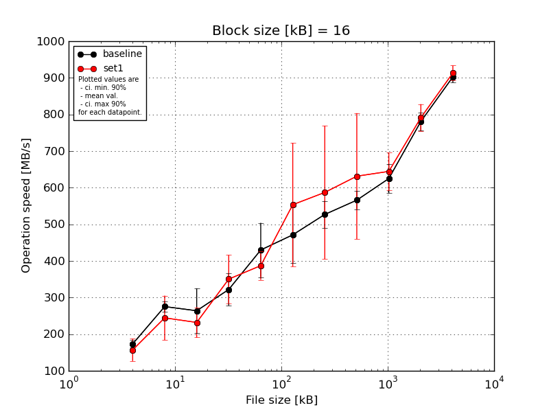
|
Block size [kB] |
File size [kB] |
| 16 |
32 |
64 |
128 |
256 |
512 |
1024 |
2048 |
4096 |
8192 |
16384 |
| baseline | 16 | 177.7 | 274.32 | 318.99 | 341.6 | 435.49 | 488.75 | 571.45 | 583.4 | 695.52 | 821.95 | 928.88 |
| 16 | 159.53 | 249.75 | 276.58 | 273.52 | 430.31 | 338.97 | 503.77 | 549.43 | 611.17 | 766.94 | 896.92 |
| 16 | 183.67 | 286.93 | 296.27 | 295.57 | 530.71 | 533.65 | 560.83 | 603.33 | 599.68 | 777.0 | 906.98 |
| 16 | 164.33 | 278.99 | 274.26 | 390.73 | 312.09 | 462.05 | 520.01 | 549.0 | 629.61 | 784.7 | 892.16 |
| 16 | 181.64 | 286.93 | 153.86 | 308.62 | 440.8 | 532.97 | 478.7 | 544.79 | 588.84 | 753.44 | 887.7 |
| mean val. |
173.37 |
275.39 |
263.99 |
322.01 |
429.88 |
471.28 |
526.95 |
565.99 |
624.97 |
780.81 |
902.53 |
| standard dev. |
10.8 |
15.31 |
64.15 |
45.65 |
77.77 |
79.99 |
38.86 |
26.03 |
42.23 |
25.81 |
16.38 |
| ci. min. 90% |
163.08 |
260.79 |
202.83 |
278.49 |
355.74 |
395.02 |
489.9 |
541.18 |
584.7 |
756.2 |
886.91 |
| ci. max 90% |
183.67 |
289.98 |
325.15 |
365.53 |
504.02 |
547.54 |
564.0 |
590.81 |
665.23 |
805.41 |
918.14 |
| geom. mean |
173.1 |
275.03 |
256.16 |
319.52 |
423.86 |
465.14 |
525.8 |
565.52 |
623.87 |
780.47 |
902.41 |
| median |
177.7 |
278.99 |
276.58 |
308.62 |
435.49 |
488.75 |
520.01 |
549.43 |
611.17 |
777.0 |
896.92 |
| first quartile |
164.33 |
274.32 |
274.26 |
295.57 |
430.31 |
462.05 |
503.77 |
549.0 |
599.68 |
766.94 |
892.16 |
| third quartile |
181.64 |
286.93 |
296.27 |
341.6 |
440.8 |
532.97 |
560.83 |
583.4 |
629.61 |
784.7 |
906.98 |
| minimum |
159.53 |
249.75 |
153.86 |
273.52 |
312.09 |
338.97 |
478.7 |
544.79 |
588.84 |
753.44 |
887.7 |
| maximum |
183.67 |
286.93 |
318.99 |
390.73 |
530.71 |
533.65 |
571.45 |
603.33 |
695.52 |
821.95 |
928.88 |
| set1 | 16 | 190.62 | 303.54 | 242.32 | 286.68 | 445.48 | 868.1 | 924.91 | 953.27 | 686.81 | 826.45 | 943.13 |
| 16 | 161.1 | 260.16 | 157.08 | 382.19 | 358.14 | 454.54 | 463.62 | 573.74 | 565.29 | 790.04 | 906.16 |
| 16 | 159.53 | 300.76 | 267.0 | 372.15 | 346.77 | 462.05 | 542.89 | 535.88 | 700.66 | 726.08 | 900.6 |
| 16 | 169.87 | 198.95 | 242.99 | 273.52 | 411.24 | 506.09 | 490.23 | 543.91 | 628.83 | 813.17 | 890.37 |
| 16 | 104.22 | 159.49 | 250.9 | 437.34 | 374.25 | 477.19 | 513.89 | 550.22 | 641.02 | 800.06 | 926.14 |
| mean val. |
157.07 |
244.58 |
232.06 |
350.38 |
387.18 |
553.59 |
587.11 |
631.41 |
644.52 |
791.16 |
913.28 |
| standard dev. |
32.03 |
63.63 |
43.08 |
68.94 |
40.68 |
176.92 |
191.09 |
180.48 |
53.56 |
38.87 |
21.17 |
| ci. min. 90% |
126.53 |
183.91 |
190.99 |
284.65 |
348.39 |
384.92 |
404.93 |
459.34 |
593.46 |
754.1 |
893.1 |
| ci. max 90% |
187.61 |
305.25 |
273.13 |
416.11 |
425.96 |
722.26 |
769.29 |
803.47 |
695.59 |
828.22 |
933.46 |
| geom. mean |
154.04 |
237.37 |
228.26 |
344.86 |
385.51 |
535.49 |
567.09 |
614.63 |
642.69 |
790.37 |
913.08 |
| median |
161.1 |
260.16 |
242.99 |
372.15 |
374.25 |
477.19 |
513.89 |
550.22 |
641.02 |
800.06 |
906.16 |
| first quartile |
159.53 |
198.95 |
242.32 |
286.68 |
358.14 |
462.05 |
490.23 |
543.91 |
628.83 |
790.04 |
900.6 |
| third quartile |
169.87 |
300.76 |
250.9 |
382.19 |
411.24 |
506.09 |
542.89 |
573.74 |
686.81 |
813.17 |
926.14 |
| minimum |
104.22 |
159.49 |
157.08 |
273.52 |
346.77 |
454.54 |
463.62 |
535.88 |
565.29 |
726.08 |
890.37 |
| maximum |
190.62 |
303.54 |
267.0 |
437.34 |
445.48 |
868.1 |
924.91 |
953.27 |
700.66 |
826.45 |
943.13 |
| baseline set1 difference |
-9.41 % |
-11.19 % |
-12.1 % |
8.81 % |
-9.93 % |
17.47 % |
11.42 % |
11.56 % |
3.13 % |
1.33 % |
1.19 % |
| ttest p-value |
0.3122 |
0.3234 |
0.3825 |
0.465 |
0.3083 |
0.3709 |
0.5098 |
0.4456 |
0.5394 |
0.6331 |
0.3953 |
| ttest equality |
SAME |
SAME |
SAME |
SAME |
SAME |
SAME |
SAME |
SAME |
SAME |
SAME |
SAME |
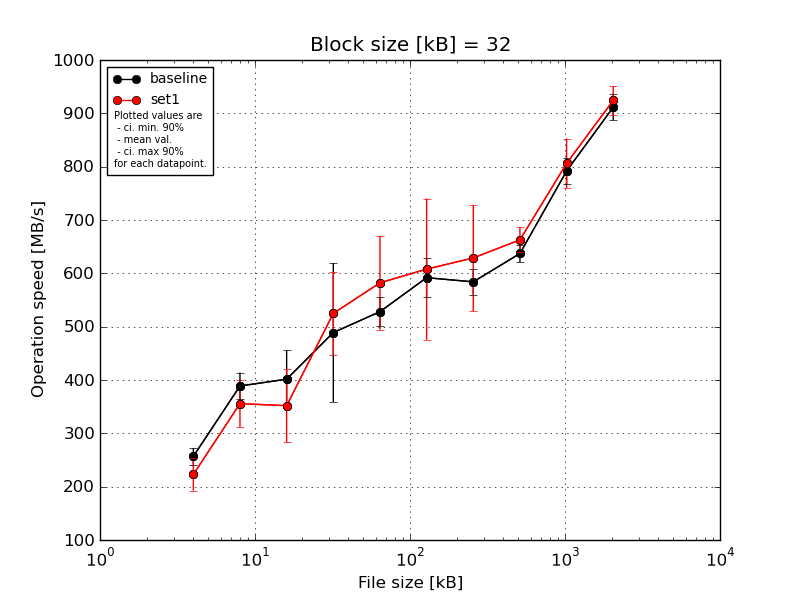
|
Block size [kB] |
File size [kB] |
| 32 |
64 |
128 |
256 |
512 |
1024 |
2048 |
4096 |
8192 |
16384 |
| baseline | 32 | 278.99 | 422.26 | 452.83 | 624.97 | 561.21 | 639.0 | 621.48 | 660.81 | 827.81 | 946.92 |
| 32 | 251.67 | 367.76 | 401.81 | 305.99 | 494.05 | 542.33 | 577.22 | 644.83 | 785.86 | 920.7 |
| 32 | 262.77 | 393.13 | 443.26 | 602.35 | 552.49 | 585.49 | 595.41 | 620.35 | 785.47 | 902.88 |
| 32 | 234.56 | 357.24 | 307.9 | 394.97 | 520.8 | 618.83 | 567.23 | 640.11 | 802.17 | 875.75 |
| 32 | 256.1 | 403.42 | 401.81 | 516.59 | 511.77 | 573.71 | 558.65 | 620.07 | 757.94 | 911.36 |
| mean val. |
256.82 |
388.76 |
401.52 |
488.97 |
528.07 |
591.87 |
584.0 |
637.24 |
791.85 |
911.52 |
| standard dev. |
16.2 |
26.42 |
57.32 |
136.41 |
28.15 |
37.99 |
25.02 |
17.33 |
25.62 |
25.94 |
| ci. min. 90% |
241.37 |
363.58 |
346.88 |
358.92 |
501.22 |
555.65 |
560.14 |
620.71 |
767.42 |
886.79 |
| ci. max 90% |
272.26 |
413.95 |
456.17 |
619.03 |
554.91 |
628.09 |
607.85 |
653.76 |
816.28 |
936.25 |
| geom. mean |
256.41 |
388.04 |
397.93 |
472.31 |
527.47 |
590.9 |
583.57 |
637.05 |
791.52 |
911.23 |
| median |
256.1 |
393.13 |
401.81 |
516.59 |
520.8 |
585.49 |
577.22 |
640.11 |
785.86 |
911.36 |
| first quartile |
251.67 |
367.76 |
401.81 |
394.97 |
511.77 |
573.71 |
567.23 |
620.35 |
785.47 |
902.88 |
| third quartile |
262.77 |
403.42 |
443.26 |
602.35 |
552.49 |
618.83 |
595.41 |
644.83 |
802.17 |
920.7 |
| minimum |
234.56 |
357.24 |
307.9 |
305.99 |
494.05 |
542.33 |
558.65 |
620.07 |
757.94 |
875.75 |
| maximum |
278.99 |
422.26 |
452.83 |
624.97 |
561.21 |
639.0 |
621.48 |
660.81 |
827.81 |
946.92 |
| set1 | 32 | 246.0 | 427.78 | 336.12 | 622.0 | 742.93 | 853.92 | 800.61 | 630.92 | 834.38 | 895.2 |
| 32 | 267.05 | 312.52 | 290.01 | 403.17 | 573.96 | 567.2 | 573.04 | 647.97 | 840.25 | 944.57 |
| 32 | 196.57 | 332.33 | 383.31 | 495.12 | 518.1 | 562.1 | 647.68 | 694.69 | 772.79 | 934.64 |
| 32 | 202.96 | 334.02 | 459.58 | 541.11 | 531.89 | 534.52 | 588.93 | 671.25 | 846.74 | 953.4 |
| 32 | 201.71 | 371.94 | 290.01 | 562.9 | 544.04 | 521.63 | 534.04 | 669.01 | 736.85 | 893.36 |
| mean val. |
222.86 |
355.72 |
351.81 |
524.86 |
582.18 |
607.87 |
628.86 |
662.77 |
806.2 |
924.24 |
| standard dev. |
31.72 |
45.66 |
71.57 |
81.91 |
92.19 |
138.84 |
104.35 |
24.31 |
48.79 |
28.15 |
| ci. min. 90% |
192.62 |
312.19 |
283.57 |
446.77 |
494.29 |
475.5 |
529.38 |
639.59 |
759.68 |
897.4 |
| ci. max 90% |
253.1 |
399.25 |
420.04 |
602.96 |
670.08 |
740.25 |
728.34 |
685.94 |
852.72 |
951.07 |
| geom. mean |
221.12 |
353.49 |
346.3 |
519.45 |
576.95 |
597.12 |
622.47 |
662.41 |
804.99 |
923.89 |
| median |
202.96 |
334.02 |
336.12 |
541.11 |
544.04 |
562.1 |
588.93 |
669.01 |
834.38 |
934.64 |
| first quartile |
201.71 |
332.33 |
290.01 |
495.12 |
531.89 |
534.52 |
573.04 |
647.97 |
772.79 |
895.2 |
| third quartile |
246.0 |
371.94 |
383.31 |
562.9 |
573.96 |
567.2 |
647.68 |
671.25 |
840.25 |
944.57 |
| minimum |
196.57 |
312.52 |
290.01 |
403.17 |
518.1 |
521.63 |
534.04 |
630.92 |
736.85 |
893.36 |
| maximum |
267.05 |
427.78 |
459.58 |
622.0 |
742.93 |
853.92 |
800.61 |
694.69 |
846.74 |
953.4 |
| baseline set1 difference |
-13.22 % |
-8.5 % |
-12.38 % |
7.34 % |
10.25 % |
2.7 % |
7.68 % |
4.01 % |
1.81 % |
1.39 % |
| ttest p-value |
0.0656 |
0.1988 |
0.2599 |
0.6276 |
0.2448 |
0.81 |
0.3772 |
0.0922 |
0.5764 |
0.4789 |
| ttest equality |
DIFF |
SAME |
SAME |
SAME |
SAME |
SAME |
SAME |
DIFF |
SAME |
SAME |
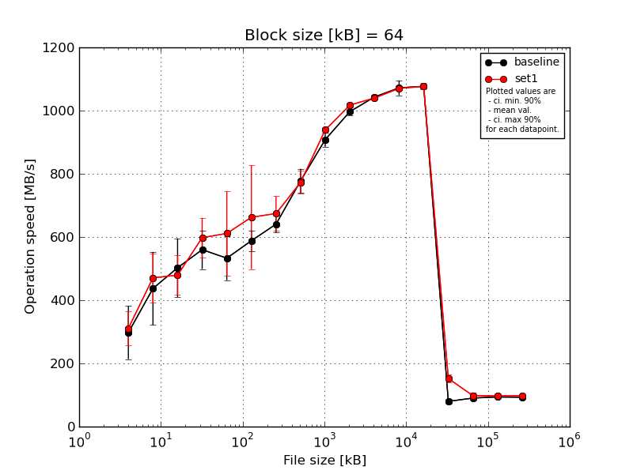
|
Block size [kB] |
File size [kB] |
| 64 |
128 |
256 |
512 |
1024 |
2048 |
4096 |
8192 |
16384 |
32768 |
65536 |
131072 |
262144 |
524288 |
1048576 |
2097152 |
4194304 |
| baseline | 64 | 393.13 | 565.69 | 608.29 | 662.23 | 594.53 | 613.48 | 683.17 | 840.61 | 932.78 | 1002.13 | 1054.94 | 1075.16 | 1086.48 | 71.99 | 91.3 | 90.01 | 93.19 |
| 64 | 258.32 | 315.49 | 415.97 | 525.76 | 413.2 | 560.71 | 626.56 | 745.86 | 925.17 | 999.06 | 1045.27 | 1058.76 | 1080.2 | 85.82 | 88.46 | 89.67 | 92.99 |
| 64 | 315.53 | 536.74 | 583.9 | 562.42 | 588.52 | 586.71 | 627.64 | 763.35 | 914.6 | 1011.89 | 1038.47 | 1058.77 | 1074.83 | 70.98 | 90.65 | 91.39 | 92.57 |
| 64 | 352.91 | 461.19 | 514.31 | 559.27 | 533.37 | 630.3 | 651.45 | 793.03 | 895.2 | 976.86 | 1033.36 | 1113.53 | 1070.15 | 89.86 | 91.81 | 98.73 | 92.75 |
| 64 | 167.1 | 306.28 | 390.7 | 490.13 | 535.27 | 549.75 | 614.44 | 747.17 | 874.03 | 993.66 | 1043.45 | 1053.5 | 1073.42 | 80.18 | 89.48 | 99.0 | 92.86 |
| mean val. |
297.4 |
437.08 |
502.63 |
559.96 |
532.98 |
588.19 |
640.65 |
778.0 |
908.36 |
996.72 |
1043.1 |
1071.94 |
1077.02 |
79.77 |
90.34 |
93.76 |
92.87 |
| standard dev. |
88.15 |
121.4 |
97.4 |
64.25 |
72.85 |
34.09 |
27.29 |
39.83 |
23.82 |
12.93 |
8.08 |
24.63 |
6.41 |
8.31 |
1.36 |
4.7 |
0.24 |
| ci. min. 90% |
213.36 |
321.34 |
409.78 |
498.71 |
463.53 |
555.69 |
614.63 |
740.03 |
885.65 |
984.39 |
1035.39 |
1048.46 |
1070.9 |
71.84 |
89.04 |
89.27 |
92.65 |
| ci. max 90% |
381.44 |
552.82 |
595.49 |
621.21 |
602.43 |
620.69 |
666.67 |
815.97 |
931.07 |
1009.05 |
1050.8 |
1095.43 |
1083.13 |
87.69 |
91.64 |
98.24 |
93.1 |
| geom. mean |
285.28 |
422.93 |
494.9 |
557.13 |
528.62 |
587.4 |
640.19 |
777.21 |
908.11 |
996.65 |
1043.07 |
1071.72 |
1077.0 |
79.42 |
90.33 |
93.66 |
92.87 |
| median |
315.53 |
461.19 |
514.31 |
559.27 |
535.27 |
586.71 |
627.64 |
763.35 |
914.6 |
999.06 |
1043.45 |
1058.77 |
1074.83 |
80.18 |
90.65 |
91.39 |
92.86 |
| first quartile |
258.32 |
315.49 |
415.97 |
525.76 |
533.37 |
560.71 |
626.56 |
747.17 |
895.2 |
993.66 |
1038.47 |
1058.76 |
1073.42 |
71.99 |
89.48 |
90.01 |
92.75 |
| third quartile |
352.91 |
536.74 |
583.9 |
562.42 |
588.52 |
613.48 |
651.45 |
793.03 |
925.17 |
1002.13 |
1045.27 |
1075.16 |
1080.2 |
85.82 |
91.3 |
98.73 |
92.99 |
| minimum |
167.1 |
306.28 |
390.7 |
490.13 |
413.2 |
549.75 |
614.44 |
745.86 |
874.03 |
976.86 |
1033.36 |
1053.5 |
1070.15 |
70.98 |
88.46 |
89.67 |
92.57 |
| maximum |
393.13 |
565.69 |
608.29 |
662.23 |
594.53 |
630.3 |
683.17 |
840.61 |
932.78 |
1011.89 |
1054.94 |
1113.53 |
1086.48 |
89.86 |
91.81 |
99.0 |
93.19 |
| set1 | 64 | 312.52 | 524.91 | 458.73 | 702.37 | 857.59 | 969.92 | 672.92 | 738.01 | 941.78 | 1023.47 | 1034.91 | 1077.74 | 1086.13 | 144.76 | 95.44 | 94.28 | 98.96 |
| 64 | 365.2 | 328.95 | 565.63 | 560.02 | 525.15 | 607.17 | 632.51 | 816.23 | 928.39 | 1027.91 | 1041.19 | 1067.49 | 1083.63 | 147.49 | 99.23 | 107.3 | 98.03 |
| 64 | 219.22 | 514.61 | 423.7 | 609.85 | 561.8 | 587.2 | 756.42 | 733.06 | 937.49 | 1018.33 | 1035.04 | 1071.35 | 1076.42 | 175.57 | 95.16 | 103.09 | 94.52 |
| 64 | 345.47 | 473.27 | 419.46 | 529.08 | 575.37 | 569.65 | 698.82 | 806.04 | 935.12 | 1011.92 | 1042.91 | 1070.61 | 1077.13 | 152.74 | 114.84 | 86.45 | 99.91 |
| 64 | 312.52 | 512.1 | 528.57 | 588.13 | 536.51 | 578.69 | 610.86 | 772.74 | 951.81 | 1005.31 | 1045.58 | 1063.71 | 1059.67 | 141.27 | 84.04 | 96.12 | 99.15 |
| mean val. |
310.99 |
470.77 |
479.22 |
597.89 |
611.28 |
662.53 |
674.31 |
773.22 |
938.92 |
1017.39 |
1039.93 |
1070.18 |
1076.6 |
152.37 |
97.74 |
97.45 |
98.11 |
| standard dev. |
56.02 |
81.67 |
65.15 |
65.81 |
139.12 |
172.39 |
57.27 |
38.01 |
8.68 |
9.01 |
4.78 |
5.19 |
10.33 |
13.63 |
11.12 |
8.09 |
2.12 |
| ci. min. 90% |
257.57 |
392.91 |
417.11 |
535.14 |
478.65 |
498.17 |
619.71 |
736.98 |
930.64 |
1008.8 |
1035.37 |
1065.23 |
1066.74 |
139.37 |
87.14 |
89.73 |
96.09 |
| ci. max 90% |
364.4 |
548.63 |
541.33 |
660.63 |
743.92 |
826.89 |
728.9 |
809.46 |
947.19 |
1025.98 |
1044.49 |
1075.13 |
1086.45 |
165.36 |
108.34 |
105.16 |
100.13 |
| geom. mean |
306.42 |
464.12 |
475.76 |
595.11 |
600.53 |
647.71 |
672.39 |
772.47 |
938.88 |
1017.36 |
1039.92 |
1070.17 |
1076.56 |
151.9 |
97.25 |
97.18 |
98.09 |
| median |
312.52 |
512.1 |
458.73 |
588.13 |
561.8 |
587.2 |
672.92 |
772.74 |
937.49 |
1018.33 |
1041.19 |
1070.61 |
1077.13 |
147.49 |
95.44 |
96.12 |
98.96 |
| first quartile |
312.52 |
473.27 |
423.7 |
560.02 |
536.51 |
578.69 |
632.51 |
738.01 |
935.12 |
1011.92 |
1035.04 |
1067.49 |
1076.42 |
144.76 |
95.16 |
94.28 |
98.03 |
| third quartile |
345.47 |
514.61 |
528.57 |
609.85 |
575.37 |
607.17 |
698.82 |
806.04 |
941.78 |
1023.47 |
1042.91 |
1071.35 |
1083.63 |
152.74 |
99.23 |
103.09 |
99.15 |
| minimum |
219.22 |
328.95 |
419.46 |
529.08 |
525.15 |
569.65 |
610.86 |
733.06 |
928.39 |
1005.31 |
1034.91 |
1063.71 |
1059.67 |
141.27 |
84.04 |
86.45 |
94.52 |
| maximum |
365.2 |
524.91 |
565.63 |
702.37 |
857.59 |
969.92 |
756.42 |
816.23 |
951.81 |
1027.91 |
1045.58 |
1077.74 |
1086.13 |
175.57 |
114.84 |
107.3 |
99.91 |
| baseline set1 difference |
4.57 % |
7.71 % |
-4.66 % |
6.77 % |
14.69 % |
12.64 % |
5.25 % |
-0.61 % |
3.36 % |
2.07 % |
-0.3 % |
-0.16 % |
-0.04 % |
91.01 % |
8.2 % |
3.94 % |
5.64 % |
| ttest p-value |
0.7785 |
0.6206 |
0.6668 |
0.3834 |
0.2972 |
0.3719 |
0.2695 |
0.8508 |
0.0273 |
0.0189 |
0.4719 |
0.8796 |
0.9406 |
0.0 |
0.1776 |
0.4036 |
0.0006 |
| ttest equality |
SAME |
SAME |
SAME |
SAME |
SAME |
SAME |
SAME |
SAME |
DIFF |
DIFF |
SAME |
SAME |
SAME |
DIFF |
SAME |
SAME |
DIFF |

|
Block size [kB] |
File size [kB] |
| 128 |
256 |
512 |
1024 |
2048 |
4096 |
8192 |
16384 |
32768 |
65536 |
131072 |
262144 |
524288 |
1048576 |
2097152 |
4194304 |
| baseline | 128 | 484.19 | 624.97 | 542.21 | 627.34 | 624.39 | 659.2 | 803.05 | 934.74 | 1006.13 | 1041.53 | 1062.92 | 1081.56 | 69.69 | 87.89 | 90.79 | 92.76 |
| 128 | 451.27 | 453.57 | 568.83 | 614.66 | 577.22 | 603.61 | 763.28 | 892.31 | 987.65 | 1034.98 | 1056.01 | 1070.99 | 68.7 | 88.02 | 91.87 | 92.59 |
| 128 | 480.64 | 428.2 | 627.36 | 594.19 | 588.76 | 601.23 | 771.69 | 912.66 | 995.3 | 1024.29 | 1054.51 | 1069.33 | 72.08 | 88.38 | 91.12 | 93.76 |
| 128 | 441.76 | 455.35 | 457.51 | 470.33 | 584.78 | 633.9 | 788.96 | 876.19 | 999.13 | 1020.31 | 1046.45 | 1060.12 | 80.04 | 90.83 | 90.55 | 92.84 |
| 128 | 497.99 | 424.56 | 485.92 | 558.06 | 593.09 | 599.15 | 754.51 | 905.95 | 993.18 | 1029.19 | 1045.82 | 1093.74 | 67.34 | 88.89 | 90.55 | 94.69 |
| mean val. |
471.17 |
477.33 |
536.37 |
572.92 |
593.65 |
619.42 |
776.3 |
904.37 |
996.28 |
1030.06 |
1053.14 |
1075.15 |
71.57 |
88.8 |
90.98 |
93.33 |
| standard dev. |
23.66 |
83.73 |
67.32 |
63.05 |
18.15 |
26.38 |
19.63 |
21.99 |
6.9 |
8.44 |
7.14 |
12.88 |
5.04 |
1.2 |
0.55 |
0.89 |
| ci. min. 90% |
448.61 |
397.5 |
472.18 |
512.8 |
576.35 |
594.26 |
757.58 |
883.41 |
989.7 |
1022.01 |
1046.33 |
1062.86 |
66.77 |
87.66 |
90.45 |
92.49 |
| ci. max 90% |
493.73 |
557.16 |
600.55 |
633.03 |
610.96 |
644.57 |
795.01 |
925.33 |
1002.85 |
1038.11 |
1059.95 |
1087.43 |
76.38 |
89.95 |
91.5 |
94.17 |
| geom. mean |
470.69 |
472.16 |
533.0 |
569.94 |
593.43 |
618.98 |
776.1 |
904.16 |
996.26 |
1030.03 |
1053.12 |
1075.08 |
71.44 |
88.8 |
90.98 |
93.33 |
| median |
480.64 |
453.57 |
542.21 |
594.19 |
588.76 |
603.61 |
771.69 |
905.95 |
995.3 |
1029.19 |
1054.51 |
1070.99 |
69.69 |
88.38 |
90.79 |
92.84 |
| first quartile |
451.27 |
428.2 |
485.92 |
558.06 |
584.78 |
601.23 |
763.28 |
892.31 |
993.18 |
1024.29 |
1046.45 |
1069.33 |
68.7 |
88.02 |
90.55 |
92.76 |
| third quartile |
484.19 |
455.35 |
568.83 |
614.66 |
593.09 |
633.9 |
788.96 |
912.66 |
999.13 |
1034.98 |
1056.01 |
1081.56 |
72.08 |
88.89 |
91.12 |
93.76 |
| minimum |
441.76 |
424.56 |
457.51 |
470.33 |
577.22 |
599.15 |
754.51 |
876.19 |
987.65 |
1020.31 |
1045.82 |
1060.12 |
67.34 |
87.89 |
90.55 |
92.59 |
| maximum |
497.99 |
624.97 |
627.36 |
627.34 |
624.39 |
659.2 |
803.05 |
934.74 |
1006.13 |
1041.53 |
1062.92 |
1093.74 |
80.04 |
90.83 |
91.87 |
94.69 |
| set1 | 128 | 478.89 | 588.49 | 702.37 | 659.71 | 935.0 | 571.51 | 833.59 | 945.85 | 1011.13 | 1025.0 | 1061.95 | 1080.69 | 136.92 | 94.8 | 92.28 | 97.76 |
| 128 | 475.41 | 554.27 | 506.7 | 573.71 | 592.21 | 609.84 | 764.24 | 903.75 | 983.01 | 1016.49 | 1059.93 | 1072.58 | 157.21 | 99.75 | 105.32 | 97.64 |
| 128 | 491.92 | 547.04 | 503.06 | 534.25 | 637.73 | 711.24 | 801.86 | 887.22 | 1000.63 | 1029.98 | 1067.12 | 1071.36 | 147.93 | 111.08 | 92.61 | 94.1 |
| 128 | 473.27 | 502.96 | 600.25 | 596.31 | 633.3 | 616.43 | 786.93 | 890.12 | 1013.46 | 1022.61 | 1058.71 | 1075.45 | 149.44 | 117.43 | 94.68 | 98.71 |
| 128 | 488.25 | 541.11 | 494.05 | 555.55 | 520.55 | 604.87 | 782.01 | 858.64 | 995.11 | 1036.23 | 1050.51 | 1071.9 | 142.64 | 106.43 | 87.17 | 97.47 |
| mean val. |
481.55 |
546.78 |
561.29 |
583.91 |
663.76 |
622.78 |
793.73 |
897.12 |
1000.67 |
1026.06 |
1059.64 |
1074.4 |
146.83 |
105.9 |
94.41 |
97.13 |
| standard dev. |
8.15 |
30.61 |
89.88 |
48.15 |
158.75 |
52.4 |
26.02 |
31.8 |
12.41 |
7.48 |
6.03 |
3.85 |
7.61 |
8.96 |
6.7 |
1.77 |
| ci. min. 90% |
473.78 |
517.59 |
475.6 |
538.0 |
512.41 |
572.82 |
768.92 |
866.79 |
988.84 |
1018.93 |
1053.89 |
1070.72 |
139.58 |
97.36 |
88.03 |
95.45 |
| ci. max 90% |
489.32 |
575.96 |
646.98 |
629.81 |
815.11 |
672.73 |
818.53 |
927.44 |
1012.5 |
1033.19 |
1065.39 |
1078.07 |
154.08 |
114.44 |
100.8 |
98.82 |
| geom. mean |
481.49 |
546.09 |
555.92 |
582.37 |
650.43 |
621.1 |
793.39 |
896.67 |
1000.6 |
1026.04 |
1059.63 |
1074.39 |
146.67 |
105.59 |
94.23 |
97.12 |
| median |
478.89 |
547.04 |
506.7 |
573.71 |
633.3 |
609.84 |
786.93 |
890.12 |
1000.63 |
1025.0 |
1059.93 |
1072.58 |
147.93 |
106.43 |
92.61 |
97.64 |
| first quartile |
475.41 |
541.11 |
503.06 |
555.55 |
592.21 |
604.87 |
782.01 |
887.22 |
995.11 |
1022.61 |
1058.71 |
1071.9 |
142.64 |
99.75 |
92.28 |
97.47 |
| third quartile |
488.25 |
554.27 |
600.25 |
596.31 |
637.73 |
616.43 |
801.86 |
903.75 |
1011.13 |
1029.98 |
1061.95 |
1075.45 |
149.44 |
111.08 |
94.68 |
97.76 |
| minimum |
473.27 |
502.96 |
494.05 |
534.25 |
520.55 |
571.51 |
764.24 |
858.64 |
983.01 |
1016.49 |
1050.51 |
1071.36 |
136.92 |
94.8 |
87.17 |
94.1 |
| maximum |
491.92 |
588.49 |
702.37 |
659.71 |
935.0 |
711.24 |
833.59 |
945.85 |
1013.46 |
1036.23 |
1067.12 |
1080.69 |
157.21 |
117.43 |
105.32 |
98.71 |
| baseline set1 difference |
2.2 % |
14.55 % |
4.65 % |
1.92 % |
11.81 % |
0.54 % |
2.24 % |
-0.8 % |
0.44 % |
-0.39 % |
0.62 % |
-0.07 % |
105.15 % |
19.25 % |
3.78 % |
4.08 % |
| ttest p-value |
0.3811 |
0.1197 |
0.6331 |
0.7647 |
0.3553 |
0.9012 |
0.2661 |
0.6859 |
0.509 |
0.4507 |
0.1586 |
0.9039 |
0.0 |
0.0029 |
0.286 |
0.0026 |
| ttest equality |
SAME |
SAME |
SAME |
SAME |
SAME |
SAME |
SAME |
SAME |
SAME |
SAME |
SAME |
SAME |
DIFF |
DIFF |
SAME |
DIFF |
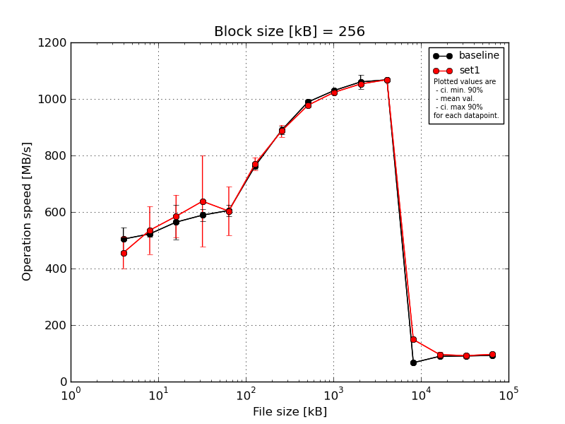
|
Block size [kB] |
File size [kB] |
| 256 |
512 |
1024 |
2048 |
4096 |
8192 |
16384 |
32768 |
65536 |
131072 |
262144 |
524288 |
1048576 |
2097152 |
4194304 |
| baseline | 256 | 558.11 | 536.93 | 626.5 | 619.78 | 634.93 | 772.88 | 909.09 | 1000.54 | 1030.66 | 1059.76 | 1077.62 | 71.05 | 88.3 | 89.4 | 92.87 |
| 256 | 502.24 | 512.78 | 486.81 | 574.37 | 592.15 | 745.31 | 880.87 | 976.39 | 1029.85 | 1054.63 | 1067.5 | 67.1 | 90.43 | 90.66 | 92.67 |
| 256 | 519.66 | 528.01 | 628.47 | 570.58 | 614.91 | 757.58 | 897.47 | 996.51 | 1036.85 | 1047.67 | 1066.71 | 66.01 | 89.63 | 89.28 | 92.82 |
| 256 | 439.32 | 510.28 | 561.73 | 602.42 | 605.79 | 771.53 | 870.19 | 982.58 | 1023.87 | 1103.02 | 1061.96 | 65.93 | 91.11 | 92.38 | 92.65 |
| 256 | 501.04 | 524.58 | 517.32 | 577.02 | 579.29 | 767.31 | 887.06 | 989.11 | 1028.79 | 1035.96 | 1065.81 | 64.91 | 87.86 | 90.95 | 92.73 |
| mean val. |
504.07 |
522.51 |
564.17 |
588.84 |
605.41 |
762.92 |
888.94 |
989.03 |
1030.0 |
1060.21 |
1067.92 |
67.0 |
89.47 |
90.54 |
92.75 |
| standard dev. |
42.92 |
11.03 |
63.65 |
21.35 |
21.33 |
11.53 |
14.99 |
9.87 |
4.65 |
25.54 |
5.83 |
2.4 |
1.38 |
1.27 |
0.09 |
| ci. min. 90% |
463.15 |
512.0 |
503.48 |
568.48 |
585.08 |
751.93 |
874.64 |
979.61 |
1025.57 |
1035.86 |
1062.37 |
64.72 |
88.15 |
89.32 |
92.66 |
| ci. max 90% |
544.99 |
533.03 |
624.85 |
609.19 |
625.75 |
773.91 |
903.23 |
998.44 |
1034.44 |
1084.56 |
1073.48 |
69.28 |
90.78 |
91.75 |
92.84 |
| geom. mean |
502.57 |
522.42 |
561.27 |
588.53 |
605.11 |
762.85 |
888.83 |
988.99 |
1030.0 |
1059.97 |
1067.91 |
66.97 |
89.46 |
90.53 |
92.75 |
| median |
502.24 |
524.58 |
561.73 |
577.02 |
605.79 |
767.31 |
887.06 |
989.11 |
1029.85 |
1054.63 |
1066.71 |
66.01 |
89.63 |
90.66 |
92.73 |
| first quartile |
501.04 |
512.78 |
517.32 |
574.37 |
592.15 |
757.58 |
880.87 |
982.58 |
1028.79 |
1047.67 |
1065.81 |
65.93 |
88.3 |
89.4 |
92.67 |
| third quartile |
519.66 |
528.01 |
626.5 |
602.42 |
614.91 |
771.53 |
897.47 |
996.51 |
1030.66 |
1059.76 |
1067.5 |
67.1 |
90.43 |
90.95 |
92.82 |
| minimum |
439.32 |
510.28 |
486.81 |
570.58 |
579.29 |
745.31 |
870.19 |
976.39 |
1023.87 |
1035.96 |
1061.96 |
64.91 |
87.86 |
89.28 |
92.65 |
| maximum |
558.11 |
536.93 |
628.47 |
619.78 |
634.93 |
772.88 |
909.09 |
1000.54 |
1036.85 |
1103.02 |
1077.62 |
71.05 |
91.11 |
92.38 |
92.87 |
| set1 | 256 | 507.1 | 680.27 | 714.8 | 924.59 | 591.54 | 787.55 | 924.65 | 980.54 | 1018.64 | 1050.63 | 1070.24 | 142.6 | 78.98 | 95.47 | 95.04 |
| 256 | 509.07 | 561.21 | 593.1 | 547.35 | 532.7 | 799.28 | 881.16 | 971.23 | 1022.33 | 1051.27 | 1071.23 | 153.34 | 105.02 | 105.94 | 97.66 |
| 256 | 475.16 | 479.37 | 530.53 | 637.54 | 760.15 | 744.73 | 875.46 | 987.84 | 1029.85 | 1049.89 | 1067.79 | 159.43 | 99.99 | 86.33 | 93.9 |
| 256 | 388.25 | 480.36 | 514.4 | 587.36 | 564.09 | 749.84 | 882.76 | 971.47 | 1022.84 | 1055.11 | 1067.68 | 147.37 | 100.09 | 81.98 | 98.09 |
| 256 | 400.55 | 475.24 | 571.13 | 493.6 | 567.78 | 772.2 | 867.55 | 976.74 | 1024.43 | 1057.8 | 1062.46 | 141.72 | 94.09 | 89.59 | 98.09 |
| mean val. |
456.02 |
535.29 |
584.79 |
638.09 |
603.25 |
770.72 |
886.31 |
977.56 |
1023.62 |
1052.94 |
1067.88 |
148.89 |
95.64 |
91.86 |
96.56 |
| standard dev. |
58.01 |
88.66 |
79.15 |
168.65 |
90.17 |
23.52 |
22.24 |
6.94 |
4.08 |
3.38 |
3.4 |
7.49 |
10.08 |
9.28 |
1.95 |
| ci. min. 90% |
400.72 |
450.76 |
509.34 |
477.3 |
517.28 |
748.3 |
865.11 |
970.95 |
1019.73 |
1049.72 |
1064.64 |
141.75 |
86.02 |
83.01 |
94.7 |
| ci. max 90% |
511.33 |
619.82 |
660.25 |
798.87 |
689.22 |
793.15 |
907.52 |
984.18 |
1027.5 |
1056.17 |
1071.12 |
156.03 |
105.25 |
100.71 |
98.42 |
| geom. mean |
452.99 |
529.9 |
580.78 |
622.59 |
598.38 |
770.43 |
886.09 |
977.54 |
1023.61 |
1052.94 |
1067.88 |
148.74 |
95.18 |
91.5 |
96.54 |
| median |
475.16 |
480.36 |
571.13 |
587.36 |
567.78 |
772.2 |
881.16 |
976.74 |
1022.84 |
1051.27 |
1067.79 |
147.37 |
99.99 |
89.59 |
97.66 |
| first quartile |
400.55 |
479.37 |
530.53 |
547.35 |
564.09 |
749.84 |
875.46 |
971.47 |
1022.33 |
1050.63 |
1067.68 |
142.6 |
94.09 |
86.33 |
95.04 |
| third quartile |
507.1 |
561.21 |
593.1 |
637.54 |
591.54 |
787.55 |
882.76 |
980.54 |
1024.43 |
1055.11 |
1070.24 |
153.34 |
100.09 |
95.47 |
98.09 |
| minimum |
388.25 |
475.24 |
514.4 |
493.6 |
532.7 |
744.73 |
867.55 |
971.23 |
1018.64 |
1049.89 |
1062.46 |
141.72 |
78.98 |
81.98 |
93.9 |
| maximum |
509.07 |
680.27 |
714.8 |
924.59 |
760.15 |
799.28 |
924.65 |
987.84 |
1029.85 |
1057.8 |
1071.23 |
159.43 |
105.02 |
105.94 |
98.09 |
| baseline set1 difference |
-9.53 % |
2.45 % |
3.66 % |
8.36 % |
-0.36 % |
1.02 % |
-0.3 % |
-1.16 % |
-0.62 % |
-0.69 % |
-0.0 % |
122.23 % |
6.9 % |
1.46 % |
4.11 % |
| ttest p-value |
0.1748 |
0.7573 |
0.6618 |
0.5352 |
0.9597 |
0.5242 |
0.8324 |
0.0664 |
0.0497 |
0.5458 |
0.9892 |
0.0 |
0.2122 |
0.7598 |
0.0024 |
| ttest equality |
SAME |
SAME |
SAME |
SAME |
SAME |
SAME |
SAME |
DIFF |
DIFF |
SAME |
SAME |
DIFF |
SAME |
SAME |
DIFF |
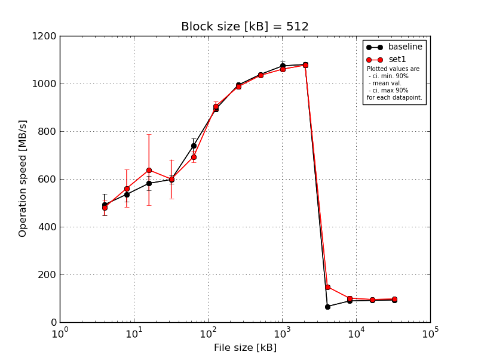
|
Block size [kB] |
File size [kB] |
| 512 |
1024 |
2048 |
4096 |
8192 |
16384 |
32768 |
65536 |
131072 |
262144 |
524288 |
1048576 |
2097152 |
4194304 |
| baseline | 512 | 556.15 | 538.5 | 558.35 | 628.93 | 793.65 | 910.8 | 1002.28 | 1046.04 | 1068.65 | 1082.14 | 65.95 | 86.94 | 92.05 | 93.25 |
| 512 | 442.08 | 500.46 | 608.05 | 592.23 | 729.45 | 884.96 | 992.19 | 1041.11 | 1068.72 | 1073.71 | 68.56 | 89.16 | 91.88 | 93.0 |
| 512 | 501.49 | 582.07 | 623.28 | 583.68 | 710.92 | 898.46 | 989.61 | 1042.34 | 1104.9 | 1099.53 | 65.31 | 88.65 | 91.41 | 93.18 |
| 512 | 512.78 | 508.41 | 554.63 | 598.08 | 729.8 | 890.71 | 993.7 | 1028.38 | 1077.02 | 1070.15 | 65.6 | 91.57 | 91.57 | 92.89 |
| 512 | 448.8 | 549.44 | 565.13 | 586.25 | 736.78 | 883.05 | 991.33 | 1034.9 | 1052.11 | 1073.51 | 65.55 | 89.89 | 90.42 | 93.13 |
| mean val. |
492.26 |
535.78 |
581.89 |
597.83 |
740.12 |
893.6 |
993.82 |
1038.55 |
1074.28 |
1079.81 |
66.2 |
89.24 |
91.47 |
93.09 |
| standard dev. |
47.42 |
32.91 |
31.53 |
18.25 |
31.42 |
11.34 |
4.96 |
6.96 |
19.36 |
11.88 |
1.34 |
1.69 |
0.64 |
0.15 |
| ci. min. 90% |
447.05 |
504.4 |
551.83 |
580.43 |
710.16 |
882.79 |
989.1 |
1031.92 |
1055.82 |
1068.48 |
64.91 |
87.63 |
90.86 |
92.95 |
| ci. max 90% |
537.47 |
567.16 |
611.95 |
615.24 |
770.08 |
904.41 |
998.55 |
1045.19 |
1092.74 |
1091.13 |
67.48 |
90.86 |
92.07 |
93.23 |
| geom. mean |
490.44 |
534.98 |
581.21 |
597.62 |
739.6 |
893.54 |
993.81 |
1038.53 |
1074.14 |
1079.76 |
66.18 |
89.23 |
91.46 |
93.09 |
| median |
501.49 |
538.5 |
565.13 |
592.23 |
729.8 |
890.71 |
992.19 |
1041.11 |
1068.72 |
1073.71 |
65.6 |
89.16 |
91.57 |
93.13 |
| first quartile |
448.8 |
508.41 |
558.35 |
586.25 |
729.45 |
884.96 |
991.33 |
1034.9 |
1068.65 |
1073.51 |
65.55 |
88.65 |
91.41 |
93.0 |
| third quartile |
512.78 |
549.44 |
608.05 |
598.08 |
736.78 |
898.46 |
993.7 |
1042.34 |
1077.02 |
1082.14 |
65.95 |
89.89 |
91.88 |
93.18 |
| minimum |
442.08 |
500.46 |
554.63 |
583.68 |
710.92 |
883.05 |
989.61 |
1028.38 |
1052.11 |
1070.15 |
65.31 |
86.94 |
90.42 |
92.89 |
| maximum |
556.15 |
582.07 |
623.28 |
628.93 |
793.65 |
910.8 |
1002.28 |
1046.04 |
1104.9 |
1099.53 |
68.56 |
91.57 |
92.05 |
93.25 |
| set1 | 512 | 534.74 | 698.72 | 909.55 | 531.92 | 716.66 | 917.64 | 982.53 | 1024.03 | 1064.2 | 1083.74 | 142.77 | 87.67 | 92.73 | 96.9 |
| 512 | 487.84 | 515.22 | 512.54 | 596.04 | 665.83 | 933.87 | 975.46 | 1037.95 | 1051.29 | 1074.68 | 153.59 | 96.28 | 105.96 | 97.8 |
| 512 | 467.3 | 505.53 | 606.43 | 745.3 | 683.11 | 888.1 | 983.35 | 1029.5 | 1070.98 | 1075.46 | 156.39 | 105.07 | 91.41 | 93.9 |
| 512 | 449.18 | 510.21 | 587.73 | 547.72 | 722.8 | 893.8 | 998.41 | 1044.81 | 1065.56 | 1074.19 | 145.12 | 113.83 | 89.78 | 99.11 |
| 512 | 463.79 | 574.03 | 572.37 | 578.37 | 677.68 | 895.11 | 995.92 | 1036.46 | 1050.68 | 1077.61 | 144.85 | 98.73 | 97.17 | 98.86 |
| mean val. |
480.57 |
560.74 |
637.72 |
599.87 |
693.22 |
905.7 |
987.13 |
1034.55 |
1060.54 |
1077.13 |
148.54 |
100.32 |
95.41 |
97.31 |
| standard dev. |
33.28 |
81.99 |
155.97 |
85.09 |
25.09 |
19.36 |
9.7 |
8.01 |
9.09 |
3.92 |
6.04 |
9.8 |
6.5 |
2.1 |
| ci. min. 90% |
448.84 |
482.57 |
489.02 |
518.74 |
669.29 |
887.24 |
977.89 |
1026.91 |
1051.88 |
1073.4 |
142.79 |
90.98 |
89.21 |
95.31 |
| ci. max 90% |
512.3 |
638.91 |
786.43 |
680.99 |
717.14 |
924.17 |
996.38 |
1042.19 |
1069.21 |
1080.87 |
154.3 |
109.66 |
101.61 |
99.32 |
| geom. mean |
479.68 |
556.35 |
624.65 |
595.45 |
692.85 |
905.54 |
987.09 |
1034.52 |
1060.51 |
1077.13 |
148.45 |
99.94 |
95.24 |
97.29 |
| median |
467.3 |
515.22 |
587.73 |
578.37 |
683.11 |
895.11 |
983.35 |
1036.46 |
1064.2 |
1075.46 |
145.12 |
98.73 |
92.73 |
97.8 |
| first quartile |
463.79 |
510.21 |
572.37 |
547.72 |
677.68 |
893.8 |
982.53 |
1029.5 |
1051.29 |
1074.68 |
144.85 |
96.28 |
91.41 |
96.9 |
| third quartile |
487.84 |
574.03 |
606.43 |
596.04 |
716.66 |
917.64 |
995.92 |
1037.95 |
1065.56 |
1077.61 |
153.59 |
105.07 |
97.17 |
98.86 |
| minimum |
449.18 |
505.53 |
512.54 |
531.92 |
665.83 |
888.1 |
975.46 |
1024.03 |
1050.68 |
1074.19 |
142.77 |
87.67 |
89.78 |
93.9 |
| maximum |
534.74 |
698.72 |
909.55 |
745.3 |
722.8 |
933.87 |
998.41 |
1044.81 |
1070.98 |
1083.74 |
156.39 |
113.83 |
105.96 |
99.11 |
| baseline set1 difference |
-2.37 % |
4.66 % |
9.6 % |
0.34 % |
-6.34 % |
1.35 % |
-0.67 % |
-0.39 % |
-1.28 % |
-0.25 % |
124.4 % |
12.41 % |
4.31 % |
4.53 % |
| ttest p-value |
0.6638 |
0.5451 |
0.4553 |
0.9596 |
0.0312 |
0.2621 |
0.2069 |
0.4234 |
0.1888 |
0.6455 |
0.0 |
0.0375 |
0.2142 |
0.0021 |
| ttest equality |
SAME |
SAME |
SAME |
SAME |
DIFF |
SAME |
SAME |
SAME |
SAME |
SAME |
DIFF |
DIFF |
SAME |
DIFF |
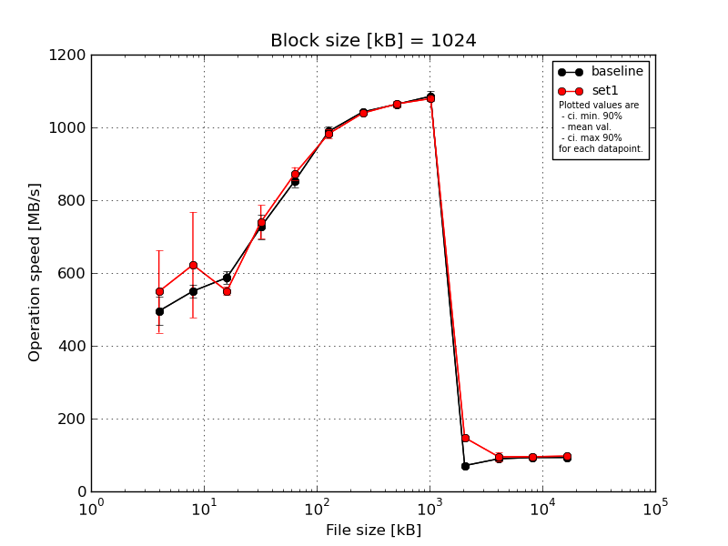
|
Block size [kB] |
File size [kB] |
| 1024 |
2048 |
4096 |
8192 |
16384 |
32768 |
65536 |
131072 |
262144 |
524288 |
1048576 |
2097152 |
4194304 |
| baseline | 1024 | 506.33 | 548.39 | 609.29 | 771.83 | 845.98 | 986.87 | 1048.92 | 1066.2 | 1087.93 | 70.18 | 89.28 | 90.79 | 92.92 |
| 1024 | 531.34 | 536.46 | 587.03 | 723.14 | 882.46 | 1000.87 | 1044.68 | 1060.74 | 1082.73 | 69.15 | 89.76 | 92.11 | 93.3 |
| 1024 | 532.83 | 572.73 | 599.08 | 687.88 | 856.67 | 981.44 | 1044.27 | 1061.97 | 1108.83 | 67.75 | 89.2 | 98.42 | 93.66 |
| 1024 | 443.85 | 527.82 | 572.66 | 750.61 | 841.0 | 972.32 | 1036.25 | 1075.56 | 1072.88 | 66.12 | 90.51 | 91.84 | 93.69 |
| 1024 | 463.16 | 565.13 | 568.01 | 700.1 | 839.23 | 1005.21 | 1038.37 | 1054.05 | 1075.43 | 80.95 | 89.62 | 92.26 | 92.82 |
| mean val. |
495.5 |
550.11 |
587.21 |
726.71 |
853.07 |
989.34 |
1042.5 |
1063.7 |
1085.56 |
70.83 |
89.68 |
93.09 |
93.28 |
| standard dev. |
40.34 |
18.86 |
17.38 |
34.77 |
17.78 |
13.63 |
5.13 |
7.93 |
14.31 |
5.86 |
0.52 |
3.04 |
0.4 |
| ci. min. 90% |
457.04 |
532.13 |
570.64 |
693.56 |
836.12 |
976.35 |
1037.61 |
1056.14 |
1071.92 |
65.24 |
89.18 |
90.19 |
92.89 |
| ci. max 90% |
533.96 |
568.09 |
603.79 |
759.86 |
870.02 |
1002.34 |
1047.39 |
1071.27 |
1099.2 |
76.41 |
90.17 |
95.98 |
93.66 |
| geom. mean |
494.16 |
549.85 |
587.01 |
726.05 |
852.92 |
989.27 |
1042.49 |
1063.68 |
1085.48 |
70.65 |
89.67 |
93.05 |
93.28 |
| median |
506.33 |
548.39 |
587.03 |
723.14 |
845.98 |
986.87 |
1044.27 |
1061.97 |
1082.73 |
69.15 |
89.62 |
92.11 |
93.3 |
| first quartile |
463.16 |
536.46 |
572.66 |
700.1 |
841.0 |
981.44 |
1038.37 |
1060.74 |
1075.43 |
67.75 |
89.28 |
91.84 |
92.92 |
| third quartile |
531.34 |
565.13 |
599.08 |
750.61 |
856.67 |
1000.87 |
1044.68 |
1066.2 |
1087.93 |
70.18 |
89.76 |
92.26 |
93.66 |
| minimum |
443.85 |
527.82 |
568.01 |
687.88 |
839.23 |
972.32 |
1036.25 |
1054.05 |
1072.88 |
66.12 |
89.2 |
90.79 |
92.82 |
| maximum |
532.83 |
572.73 |
609.29 |
771.83 |
882.46 |
1005.21 |
1048.92 |
1075.56 |
1108.83 |
80.95 |
90.51 |
98.42 |
93.69 |
| set1 | 1024 | 756.44 | 888.08 | 540.77 | 754.58 | 867.92 | 987.8 | 1043.64 | 1071.19 | 1082.77 | 142.03 | 77.36 | 84.39 | 98.39 |
| 1024 | 513.89 | 598.25 | 570.27 | 771.6 | 880.23 | 970.96 | 1040.77 | 1065.92 | 1078.82 | 152.84 | 94.04 | 105.62 | 97.72 |
| 1024 | 494.8 | 548.39 | 542.67 | 656.81 | 846.02 | 1002.98 | 1040.87 | 1070.98 | 1087.03 | 147.46 | 104.95 | 93.33 | 97.41 |
| 1024 | 524.37 | 506.44 | 549.09 | 741.44 | 871.99 | 974.57 | 1031.44 | 1066.7 | 1079.26 | 148.05 | 110.34 | 97.12 | 95.53 |
| 1024 | 456.66 | 571.09 | 549.52 | 775.79 | 897.77 | 977.57 | 1038.71 | 1048.01 | 1067.94 | 148.89 | 88.83 | 96.28 | 96.58 |
| mean val. |
549.23 |
622.45 |
550.46 |
740.04 |
872.79 |
982.78 |
1039.08 |
1064.56 |
1079.17 |
147.85 |
95.11 |
95.35 |
97.12 |
| standard dev. |
118.67 |
152.25 |
11.72 |
48.51 |
18.84 |
12.92 |
4.62 |
9.56 |
7.09 |
3.88 |
13.08 |
7.64 |
1.1 |
| ci. min. 90% |
436.09 |
477.29 |
539.29 |
693.79 |
854.82 |
970.46 |
1034.68 |
1055.45 |
1072.41 |
144.16 |
82.63 |
88.06 |
96.07 |
| ci. max 90% |
662.37 |
767.61 |
561.64 |
786.3 |
890.75 |
995.09 |
1043.49 |
1073.67 |
1085.92 |
151.55 |
107.58 |
102.64 |
98.18 |
| geom. mean |
540.33 |
609.72 |
550.36 |
738.71 |
872.62 |
982.71 |
1039.08 |
1064.53 |
1079.15 |
147.81 |
94.37 |
95.1 |
97.12 |
| median |
513.89 |
571.09 |
549.09 |
754.58 |
871.99 |
977.57 |
1040.77 |
1066.7 |
1079.26 |
148.05 |
94.04 |
96.28 |
97.41 |
| first quartile |
494.8 |
548.39 |
542.67 |
741.44 |
867.92 |
974.57 |
1038.71 |
1065.92 |
1078.82 |
147.46 |
88.83 |
93.33 |
96.58 |
| third quartile |
524.37 |
598.25 |
549.52 |
771.6 |
880.23 |
987.8 |
1040.87 |
1070.98 |
1082.77 |
148.89 |
104.95 |
97.12 |
97.72 |
| minimum |
456.66 |
506.44 |
540.77 |
656.81 |
846.02 |
970.96 |
1031.44 |
1048.01 |
1067.94 |
142.03 |
77.36 |
84.39 |
95.53 |
| maximum |
756.44 |
888.08 |
570.27 |
775.79 |
897.77 |
1002.98 |
1043.64 |
1071.19 |
1087.03 |
152.84 |
110.34 |
105.62 |
98.39 |
| baseline set1 difference |
10.84 % |
13.15 % |
-6.26 % |
1.83 % |
2.31 % |
-0.66 % |
-0.33 % |
0.08 % |
-0.59 % |
108.75 % |
6.06 % |
2.43 % |
4.12 % |
| ttest p-value |
0.3659 |
0.3225 |
0.0044 |
0.6309 |
0.1272 |
0.457 |
0.3006 |
0.8809 |
0.3967 |
0.0 |
0.3808 |
0.5557 |
0.0001 |
| ttest equality |
SAME |
SAME |
DIFF |
SAME |
SAME |
SAME |
SAME |
SAME |
SAME |
DIFF |
SAME |
SAME |
DIFF |
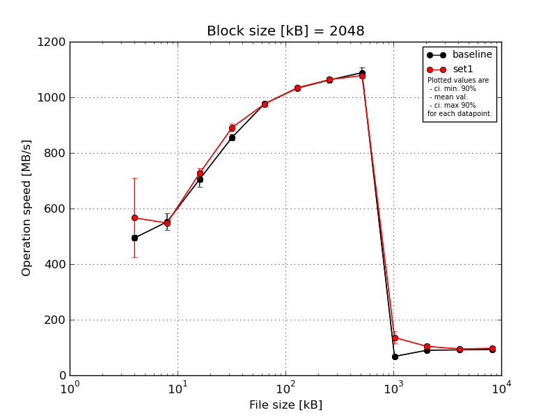
|
Block size [kB] |
File size [kB] |
| 2048 |
4096 |
8192 |
16384 |
32768 |
65536 |
131072 |
262144 |
524288 |
1048576 |
2097152 |
4194304 |
| baseline | 2048 | 505.56 | 596.04 | 716.52 | 867.2 | 980.63 | 1037.24 | 1063.77 | 1119.77 | 71.26 | 91.32 | 91.47 | 92.95 |
| 2048 | 486.5 | 540.98 | 733.87 | 857.68 | 982.11 | 1039.46 | 1060.31 | 1078.43 | 68.27 | 89.38 | 91.72 | 94.04 |
| 2048 | 486.87 | 516.34 | 673.11 | 861.33 | 981.45 | 1029.42 | 1054.11 | 1071.18 | 65.19 | 91.9 | 91.37 | 92.72 |
| 2048 | 486.25 | 568.11 | 677.9 | 835.17 | 969.55 | 1028.36 | 1078.87 | 1097.55 | 69.45 | 89.86 | 91.84 | 92.72 |
| 2048 | 505.56 | 539.31 | 722.6 | 857.91 | 970.57 | 1028.89 | 1055.64 | 1076.0 | 65.0 | 88.71 | 90.69 | 93.45 |
| mean val. |
494.14 |
552.15 |
704.8 |
855.86 |
976.86 |
1032.67 |
1062.54 |
1088.59 |
67.83 |
90.23 |
91.42 |
93.18 |
| standard dev. |
10.42 |
30.63 |
27.51 |
12.19 |
6.24 |
5.26 |
9.89 |
20.11 |
2.72 |
1.34 |
0.45 |
0.57 |
| ci. min. 90% |
484.21 |
522.95 |
678.57 |
844.24 |
970.91 |
1027.66 |
1053.11 |
1069.42 |
65.24 |
88.95 |
90.99 |
92.64 |
| ci. max 90% |
504.08 |
581.36 |
731.02 |
867.48 |
982.81 |
1037.69 |
1071.97 |
1107.76 |
70.43 |
91.51 |
91.85 |
93.72 |
| geom. mean |
494.06 |
551.48 |
704.37 |
855.79 |
976.85 |
1032.66 |
1062.5 |
1088.44 |
67.79 |
90.22 |
91.42 |
93.18 |
| median |
486.87 |
540.98 |
716.52 |
857.91 |
980.63 |
1029.42 |
1060.31 |
1078.43 |
68.27 |
89.86 |
91.47 |
92.95 |
| first quartile |
486.5 |
539.31 |
677.9 |
857.68 |
970.57 |
1028.89 |
1055.64 |
1076.0 |
65.19 |
89.38 |
91.37 |
92.72 |
| third quartile |
505.56 |
568.11 |
722.6 |
861.33 |
981.45 |
1037.24 |
1063.77 |
1097.55 |
69.45 |
91.32 |
91.72 |
93.45 |
| minimum |
486.25 |
516.34 |
673.11 |
835.17 |
969.55 |
1028.36 |
1054.11 |
1071.18 |
65.0 |
88.71 |
90.69 |
92.72 |
| maximum |
505.56 |
596.04 |
733.87 |
867.2 |
982.11 |
1039.46 |
1078.87 |
1119.77 |
71.26 |
91.9 |
91.84 |
94.04 |
| set1 | 2048 | 832.96 | 548.01 | 750.76 | 907.96 | 961.65 | 1031.66 | 1063.65 | 1083.47 | 94.33 | 101.95 | 92.65 | 98.2 |
| 2048 | 508.13 | 538.65 | 729.86 | 900.8 | 981.78 | 1036.08 | 1060.61 | 1078.15 | 148.5 | 103.85 | 102.83 | 98.28 |
| 2048 | 495.05 | 546.67 | 696.63 | 883.83 | 974.27 | 1044.81 | 1062.3 | 1076.29 | 148.79 | 98.58 | 89.92 | 94.21 |
| 2048 | 512.29 | 556.79 | 725.35 | 871.75 | 980.06 | 1036.25 | 1061.8 | 1076.33 | 145.31 | 119.63 | 94.61 | 97.48 |
| 2048 | 483.8 | 549.45 | 731.4 | 891.81 | 982.71 | 1020.65 | 1070.57 | 1077.95 | 143.83 | 95.58 | 95.41 | 96.68 |
| mean val. |
566.45 |
547.91 |
726.8 |
891.23 |
976.09 |
1033.89 |
1063.79 |
1078.44 |
136.15 |
103.92 |
95.08 |
96.97 |
| standard dev. |
149.41 |
6.49 |
19.48 |
14.2 |
8.71 |
8.8 |
3.94 |
2.95 |
23.47 |
9.34 |
4.82 |
1.67 |
| ci. min. 90% |
424.0 |
541.72 |
708.23 |
877.7 |
967.79 |
1025.5 |
1060.03 |
1075.63 |
113.77 |
95.01 |
90.49 |
95.37 |
| ci. max 90% |
708.89 |
554.1 |
745.37 |
904.76 |
984.4 |
1042.28 |
1067.55 |
1081.25 |
158.53 |
112.82 |
99.68 |
98.56 |
| geom. mean |
553.46 |
547.88 |
726.59 |
891.14 |
976.06 |
1033.86 |
1063.78 |
1078.43 |
134.22 |
103.6 |
94.99 |
96.96 |
| median |
508.13 |
548.01 |
729.86 |
891.81 |
980.06 |
1036.08 |
1062.3 |
1077.95 |
145.31 |
101.95 |
94.61 |
97.48 |
| first quartile |
495.05 |
546.67 |
725.35 |
883.83 |
974.27 |
1031.66 |
1061.8 |
1076.33 |
143.83 |
98.58 |
92.65 |
96.68 |
| third quartile |
512.29 |
549.45 |
731.4 |
900.8 |
981.78 |
1036.25 |
1063.65 |
1078.15 |
148.5 |
103.85 |
95.41 |
98.2 |
| minimum |
483.8 |
538.65 |
696.63 |
871.75 |
961.65 |
1020.65 |
1060.61 |
1076.29 |
94.33 |
95.58 |
89.92 |
94.21 |
| maximum |
832.96 |
556.79 |
750.76 |
907.96 |
982.71 |
1044.81 |
1070.57 |
1083.47 |
148.79 |
119.63 |
102.83 |
98.28 |
| baseline set1 difference |
14.63 % |
-0.77 % |
3.12 % |
4.13 % |
-0.08 % |
0.12 % |
0.12 % |
-0.93 % |
100.72 % |
15.17 % |
4.01 % |
4.07 % |
| ttest p-value |
0.3118 |
0.7698 |
0.1825 |
0.0029 |
0.8767 |
0.7973 |
0.8004 |
0.2964 |
0.0002 |
0.0118 |
0.1287 |
0.0014 |
| ttest equality |
SAME |
SAME |
SAME |
DIFF |
SAME |
SAME |
SAME |
SAME |
DIFF |
DIFF |
SAME |
DIFF |
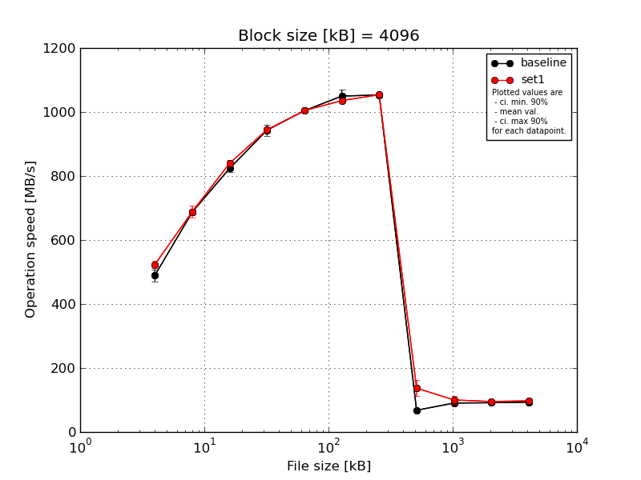
|
Block size [kB] |
File size [kB] |
| 4096 |
8192 |
16384 |
32768 |
65536 |
131072 |
262144 |
524288 |
1048576 |
2097152 |
4194304 |
| baseline | 4096 | 501.37 | 691.62 | 831.73 | 960.65 | 1004.71 | 1065.8 | 1061.1 | 72.48 | 88.61 | 91.7 | 92.88 |
| 4096 | 497.83 | 696.67 | 824.06 | 939.41 | 1006.3 | 1077.69 | 1055.15 | 68.15 | 90.71 | 91.3 | 93.13 |
| 4096 | 497.33 | 686.69 | 842.1 | 947.14 | 1000.01 | 1038.44 | 1051.84 | 66.27 | 91.95 | 90.43 | 92.42 |
| 4096 | 454.5 | 685.75 | 810.29 | 914.49 | 1003.05 | 1035.45 | 1044.39 | 66.69 | 90.23 | 91.36 | 93.2 |
| 4096 | 497.83 | 674.6 | 812.39 | 954.11 | 1006.9 | 1031.8 | 1053.43 | 66.05 | 91.14 | 92.32 | 94.29 |
| mean val. |
489.77 |
687.07 |
824.11 |
943.16 |
1004.2 |
1049.84 |
1053.18 |
67.93 |
90.53 |
91.42 |
93.19 |
| standard dev. |
19.78 |
8.22 |
13.33 |
17.87 |
2.78 |
20.57 |
6.03 |
2.67 |
1.24 |
0.69 |
0.69 |
| ci. min. 90% |
470.91 |
679.23 |
811.41 |
926.12 |
1001.55 |
1030.22 |
1047.43 |
65.38 |
89.34 |
90.76 |
92.53 |
| ci. max 90% |
508.63 |
694.9 |
836.82 |
960.2 |
1006.84 |
1069.45 |
1058.93 |
70.48 |
91.71 |
92.07 |
93.84 |
| geom. mean |
489.44 |
687.03 |
824.03 |
943.02 |
1004.19 |
1049.68 |
1053.17 |
67.89 |
90.52 |
91.42 |
93.18 |
| median |
497.83 |
686.69 |
824.06 |
947.14 |
1004.71 |
1038.44 |
1053.43 |
66.69 |
90.71 |
91.36 |
93.13 |
| first quartile |
497.33 |
685.75 |
812.39 |
939.41 |
1003.05 |
1035.45 |
1051.84 |
66.27 |
90.23 |
91.3 |
92.88 |
| third quartile |
497.83 |
691.62 |
831.73 |
954.11 |
1006.3 |
1065.8 |
1055.15 |
68.15 |
91.14 |
91.7 |
93.2 |
| minimum |
454.5 |
674.6 |
810.29 |
914.49 |
1000.01 |
1031.8 |
1044.39 |
66.05 |
88.61 |
90.43 |
92.42 |
| maximum |
501.37 |
696.67 |
842.1 |
960.65 |
1006.9 |
1077.69 |
1061.1 |
72.48 |
91.95 |
92.32 |
94.29 |
| set1 | 4096 | 525.08 | 707.41 | 848.62 | 948.4 | 1011.59 | 1037.96 | 1057.65 | 144.81 | 93.95 | 92.38 | 98.58 |
| 4096 | 508.77 | 682.77 | 851.02 | 939.33 | 1003.76 | 1029.71 | 1051.02 | 154.61 | 112.07 | 104.57 | 98.64 |
| 4096 | 528.12 | 672.21 | 836.25 | 956.39 | 1001.86 | 1043.69 | 1058.71 | 138.55 | 82.64 | 90.41 | 93.48 |
| 4096 | 516.8 | 671.25 | 826.32 | 932.21 | 1005.07 | 1036.03 | 1052.81 | 156.29 | 116.04 | 93.53 | 98.34 |
| 4096 | 539.38 | 709.77 | 837.26 | 946.86 | 999.95 | 1031.52 | 1049.53 | 91.17 | 96.39 | 95.07 | 98.53 |
| mean val. |
523.63 |
688.68 |
839.9 |
944.64 |
1004.45 |
1035.78 |
1053.94 |
137.08 |
100.22 |
95.19 |
97.51 |
| standard dev. |
11.59 |
18.75 |
10.05 |
9.22 |
4.44 |
5.53 |
4.05 |
26.67 |
13.73 |
5.51 |
2.26 |
| ci. min. 90% |
512.58 |
670.81 |
830.31 |
935.85 |
1000.22 |
1030.51 |
1050.08 |
111.65 |
87.13 |
89.94 |
95.36 |
| ci. max 90% |
534.68 |
706.55 |
849.48 |
953.42 |
1008.68 |
1041.05 |
1057.81 |
162.52 |
113.31 |
100.45 |
99.66 |
| geom. mean |
523.53 |
688.48 |
839.85 |
944.6 |
1004.44 |
1035.77 |
1053.93 |
134.61 |
99.46 |
95.07 |
97.49 |
| median |
525.08 |
682.77 |
837.26 |
946.86 |
1003.76 |
1036.03 |
1052.81 |
144.81 |
96.39 |
93.53 |
98.53 |
| first quartile |
516.8 |
672.21 |
836.25 |
939.33 |
1001.86 |
1031.52 |
1051.02 |
138.55 |
93.95 |
92.38 |
98.34 |
| third quartile |
528.12 |
707.41 |
848.62 |
948.4 |
1005.07 |
1037.96 |
1057.65 |
154.61 |
112.07 |
95.07 |
98.58 |
| minimum |
508.77 |
671.25 |
826.32 |
932.21 |
999.95 |
1029.71 |
1049.53 |
91.17 |
82.64 |
90.41 |
93.48 |
| maximum |
539.38 |
709.77 |
851.02 |
956.39 |
1011.59 |
1043.69 |
1058.71 |
156.29 |
116.04 |
104.57 |
98.64 |
| baseline set1 difference |
6.91 % |
0.24 % |
1.91 % |
0.16 % |
0.02 % |
-1.34 % |
0.07 % |
101.81 % |
10.7 % |
4.13 % |
4.64 % |
| ttest p-value |
0.0108 |
0.8644 |
0.0675 |
0.8736 |
0.9178 |
0.1784 |
0.8215 |
0.0004 |
0.1547 |
0.1673 |
0.0034 |
| ttest equality |
DIFF |
SAME |
DIFF |
SAME |
SAME |
SAME |
SAME |
DIFF |
SAME |
SAME |
DIFF |
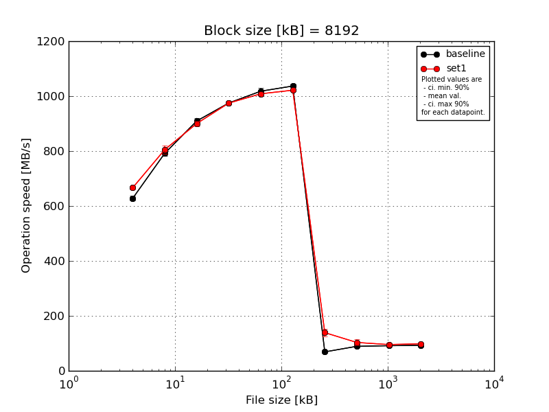
|
Block size [kB] |
File size [kB] |
| 8192 |
16384 |
32768 |
65536 |
131072 |
262144 |
524288 |
1048576 |
2097152 |
4194304 |
| baseline | 8192 | 640.67 | 799.68 | 914.91 | 978.67 | 1034.79 | 1052.33 | 71.57 | 91.91 | 90.64 | 93.15 |
| 8192 | 620.15 | 801.03 | 915.52 | 979.43 | 1011.34 | 1035.22 | 68.27 | 91.81 | 91.63 | 92.88 |
| 8192 | 625.78 | 786.51 | 920.54 | 971.18 | 1024.93 | 1035.26 | 72.3 | 82.32 | 91.47 | 93.03 |
| 8192 | 619.73 | 781.17 | 904.93 | 967.97 | 1007.59 | 1027.15 | 65.63 | 89.87 | 91.14 | 92.91 |
| 8192 | 632.71 | 789.3 | 891.34 | 977.5 | 1011.2 | 1033.98 | 66.26 | 89.96 | 91.69 | 92.93 |
| mean val. |
627.81 |
791.54 |
909.45 |
974.95 |
1017.97 |
1036.79 |
68.81 |
89.17 |
91.32 |
92.98 |
| standard dev. |
8.91 |
8.58 |
11.6 |
5.08 |
11.5 |
9.32 |
3.03 |
3.95 |
0.43 |
0.11 |
| ci. min. 90% |
619.31 |
783.36 |
898.39 |
970.1 |
1007.01 |
1027.91 |
65.92 |
85.41 |
90.9 |
92.87 |
| ci. max 90% |
636.3 |
799.71 |
920.51 |
979.8 |
1028.93 |
1045.67 |
71.69 |
92.94 |
91.73 |
93.09 |
| geom. mean |
627.76 |
791.5 |
909.39 |
974.94 |
1017.92 |
1036.76 |
68.75 |
89.1 |
91.32 |
92.98 |
| median |
625.78 |
789.3 |
914.91 |
977.5 |
1011.34 |
1035.22 |
68.27 |
89.96 |
91.47 |
92.93 |
| first quartile |
620.15 |
786.51 |
904.93 |
971.18 |
1011.2 |
1033.98 |
66.26 |
89.87 |
91.14 |
92.91 |
| third quartile |
632.71 |
799.68 |
915.52 |
978.67 |
1024.93 |
1035.26 |
71.57 |
91.81 |
91.63 |
93.03 |
| minimum |
619.73 |
781.17 |
891.34 |
967.97 |
1007.59 |
1027.15 |
65.63 |
82.32 |
90.64 |
92.88 |
| maximum |
640.67 |
801.03 |
920.54 |
979.43 |
1034.79 |
1052.33 |
72.3 |
91.91 |
91.69 |
93.15 |
| set1 | 8192 | 665.9 | 778.74 | 895.56 | 973.15 | 1005.89 | 1019.83 | 136.67 | 87.52 | 84.02 | 99.09 |
| 8192 | 671.64 | 812.67 | 908.47 | 972.1 | 1004.09 | 1020.22 | 149.55 | 110.42 | 105.99 | 99.33 |
| 8192 | 660.02 | 814.04 | 905.42 | 982.33 | 1016.5 | 1027.95 | 114.21 | 103.29 | 100.96 | 95.97 |
| 8192 | 658.28 | 802.85 | 885.66 | 978.15 | 1014.05 | 1019.36 | 147.35 | 116.34 | 91.07 | 98.49 |
| 8192 | 675.79 | 816.79 | 905.51 | 967.12 | 1002.18 | 1020.55 | 147.13 | 98.24 | 95.22 | 99.04 |
| mean val. |
666.33 |
805.02 |
900.12 |
974.57 |
1008.54 |
1021.58 |
138.98 |
103.16 |
95.45 |
98.38 |
| standard dev. |
7.46 |
15.6 |
9.44 |
5.85 |
6.34 |
3.59 |
14.72 |
11.13 |
8.53 |
1.39 |
| ci. min. 90% |
659.21 |
790.15 |
891.12 |
968.99 |
1002.49 |
1018.16 |
124.95 |
92.56 |
87.32 |
97.06 |
| ci. max 90% |
673.44 |
819.9 |
909.13 |
980.14 |
1014.59 |
1025.0 |
153.02 |
113.77 |
103.59 |
99.71 |
| geom. mean |
666.29 |
804.9 |
900.08 |
974.55 |
1008.53 |
1021.58 |
138.31 |
102.67 |
95.14 |
98.38 |
| median |
665.9 |
812.67 |
905.42 |
973.15 |
1005.89 |
1020.22 |
147.13 |
103.29 |
95.22 |
99.04 |
| first quartile |
660.02 |
802.85 |
895.56 |
972.1 |
1004.09 |
1019.83 |
136.67 |
98.24 |
91.07 |
98.49 |
| third quartile |
671.64 |
814.04 |
905.51 |
978.15 |
1014.05 |
1020.55 |
147.35 |
110.42 |
100.96 |
99.09 |
| minimum |
658.28 |
778.74 |
885.66 |
967.12 |
1002.18 |
1019.36 |
114.21 |
87.52 |
84.02 |
95.97 |
| maximum |
675.79 |
816.79 |
908.47 |
982.33 |
1016.5 |
1027.95 |
149.55 |
116.34 |
105.99 |
99.33 |
| baseline set1 difference |
6.14 % |
1.7 % |
-1.03 % |
-0.04 % |
-0.93 % |
-1.47 % |
101.99 % |
15.69 % |
4.53 % |
5.81 % |
| ttest p-value |
0.0001 |
0.1289 |
0.2009 |
0.9147 |
0.1471 |
0.0093 |
0.0 |
0.0293 |
0.3106 |
0.0 |
| ttest equality |
DIFF |
SAME |
SAME |
SAME |
SAME |
DIFF |
DIFF |
DIFF |
SAME |
DIFF |
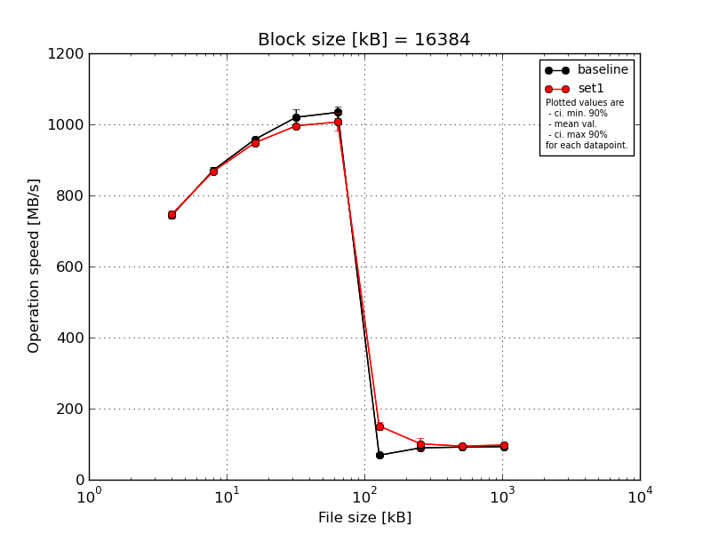
|
Block size [kB] |
File size [kB] |
| 16384 |
32768 |
65536 |
131072 |
262144 |
524288 |
1048576 |
2097152 |
4194304 |
| baseline | 16384 | 754.08 | 883.81 | 959.88 | 1016.41 | 1062.83 | 77.4 | 91.44 | 91.33 | 92.97 |
| 16384 | 742.87 | 873.43 | 958.81 | 1004.15 | 1029.02 | 68.67 | 90.89 | 92.67 | 92.75 |
| 16384 | 744.42 | 869.33 | 957.77 | 1046.63 | 1026.21 | 66.46 | 90.05 | 91.36 | 93.35 |
| 16384 | 747.22 | 858.39 | 954.9 | 1038.83 | 1021.06 | 66.42 | 87.9 | 91.93 | 93.17 |
| 16384 | 731.53 | 869.95 | 956.14 | 993.81 | 1030.69 | 65.38 | 88.21 | 92.14 | 92.89 |
| mean val. |
744.02 |
870.98 |
957.5 |
1019.97 |
1033.96 |
68.87 |
89.7 |
91.89 |
93.02 |
| standard dev. |
8.2 |
9.12 |
2.01 |
22.44 |
16.54 |
4.92 |
1.58 |
0.56 |
0.23 |
| ci. min. 90% |
736.21 |
862.28 |
955.59 |
998.58 |
1018.19 |
64.17 |
88.19 |
91.35 |
92.8 |
| ci. max 90% |
751.84 |
879.68 |
959.41 |
1041.36 |
1049.73 |
73.56 |
91.21 |
92.42 |
93.25 |
| geom. mean |
743.99 |
870.94 |
957.5 |
1019.77 |
1033.86 |
68.73 |
89.69 |
91.88 |
93.02 |
| median |
744.42 |
869.95 |
957.77 |
1016.41 |
1029.02 |
66.46 |
90.05 |
91.93 |
92.97 |
| first quartile |
742.87 |
869.33 |
956.14 |
1004.15 |
1026.21 |
66.42 |
88.21 |
91.36 |
92.89 |
| third quartile |
747.22 |
873.43 |
958.81 |
1038.83 |
1030.69 |
68.67 |
90.89 |
92.14 |
93.17 |
| minimum |
731.53 |
858.39 |
954.9 |
993.81 |
1021.06 |
65.38 |
87.9 |
91.33 |
92.75 |
| maximum |
754.08 |
883.81 |
959.88 |
1046.63 |
1062.83 |
77.4 |
91.44 |
92.67 |
93.35 |
| set1 | 16384 | 744.53 | 873.6 | 949.34 | 997.86 | 960.88 | 144.69 | 84.9 | 93.35 | 97.01 |
| 16384 | 730.92 | 863.56 | 947.87 | 994.39 | 1015.95 | 161.83 | 111.09 | 106.33 | 96.72 |
| 16384 | 749.48 | 868.71 | 958.23 | 999.46 | 1028.05 | 164.83 | 99.63 | 92.05 | 98.0 |
| 16384 | 753.01 | 865.26 | 947.1 | 998.93 | 1015.99 | 147.98 | 123.86 | 89.13 | 96.92 |
| 16384 | 756.82 | 868.17 | 937.51 | 989.59 | 1013.23 | 136.81 | 85.24 | 91.51 | 99.66 |
| mean val. |
746.95 |
867.86 |
948.01 |
996.05 |
1006.82 |
151.23 |
100.94 |
94.47 |
97.66 |
| standard dev. |
10.04 |
3.84 |
7.37 |
4.11 |
26.32 |
11.82 |
16.84 |
6.8 |
1.22 |
| ci. min. 90% |
737.38 |
864.2 |
940.98 |
992.13 |
981.73 |
139.96 |
84.89 |
87.99 |
96.5 |
| ci. max 90% |
756.53 |
871.53 |
955.04 |
999.97 |
1031.91 |
162.5 |
117.0 |
100.96 |
98.82 |
| geom. mean |
746.9 |
867.86 |
947.99 |
996.04 |
1006.54 |
150.86 |
99.84 |
94.29 |
97.65 |
| median |
749.48 |
868.17 |
947.87 |
997.86 |
1015.95 |
147.98 |
99.63 |
92.05 |
97.01 |
| first quartile |
744.53 |
865.26 |
947.1 |
994.39 |
1013.23 |
144.69 |
85.24 |
91.51 |
96.92 |
| third quartile |
753.01 |
868.71 |
949.34 |
998.93 |
1015.99 |
161.83 |
111.09 |
93.35 |
98.0 |
| minimum |
730.92 |
863.56 |
937.51 |
989.59 |
960.88 |
136.81 |
84.9 |
89.13 |
96.72 |
| maximum |
756.82 |
873.6 |
958.23 |
999.46 |
1028.05 |
164.83 |
123.86 |
106.33 |
99.66 |
| baseline set1 difference |
0.39 % |
-0.36 % |
-0.99 % |
-2.35 % |
-2.62 % |
119.6 % |
12.54 % |
2.82 % |
4.98 % |
| ttest p-value |
0.627 |
0.5011 |
0.024 |
0.0471 |
0.0867 |
0.0 |
0.1754 |
0.4214 |
0.0 |
| ttest equality |
SAME |
SAME |
DIFF |
DIFF |
DIFF |
DIFF |
SAME |
SAME |
DIFF |